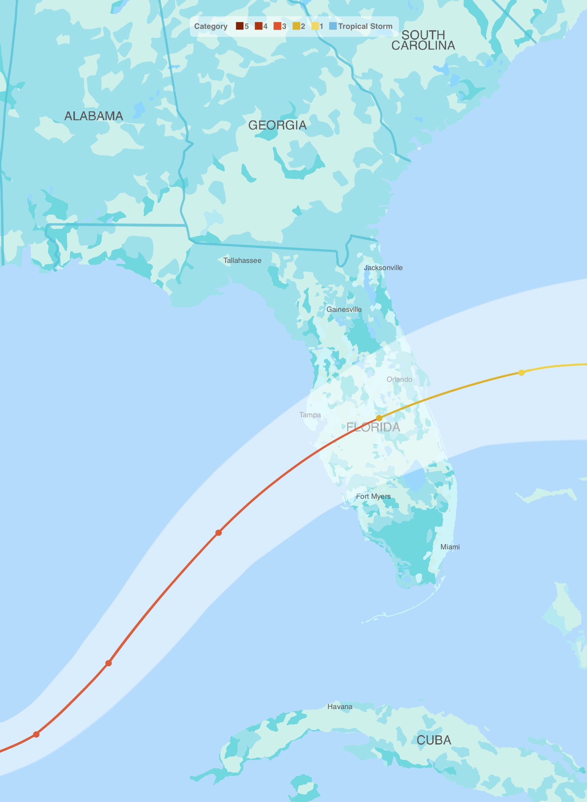
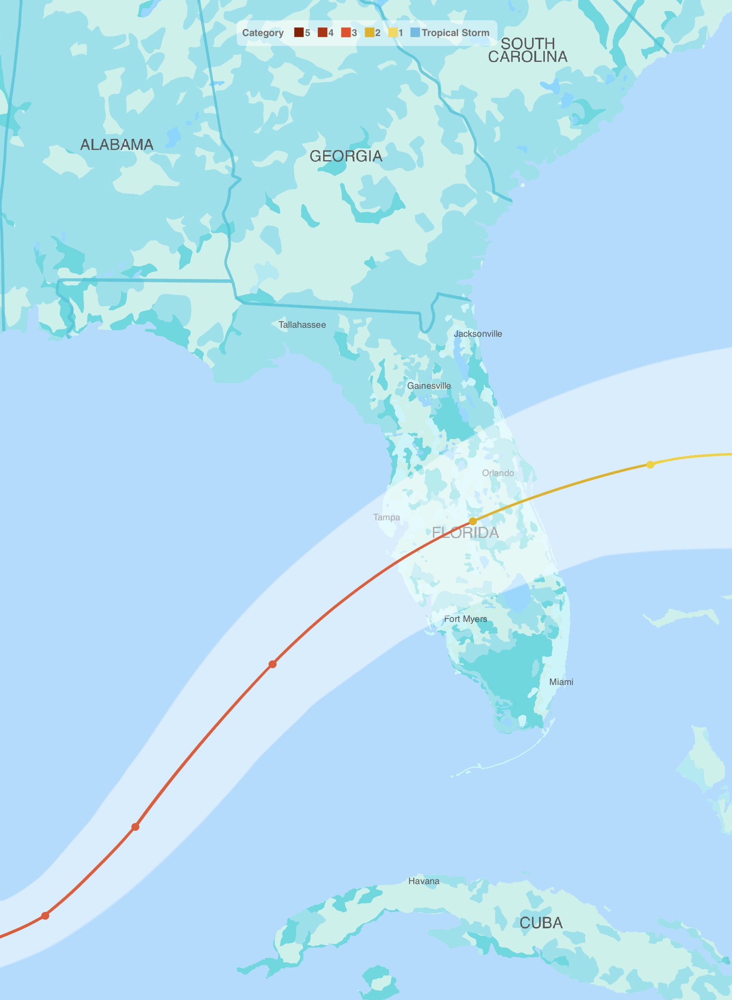
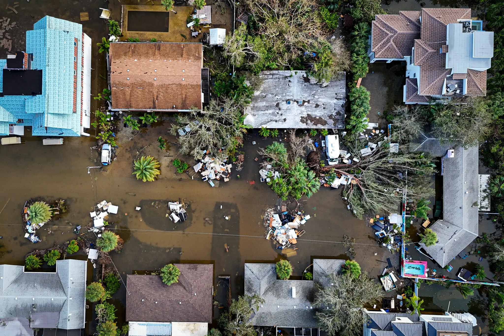
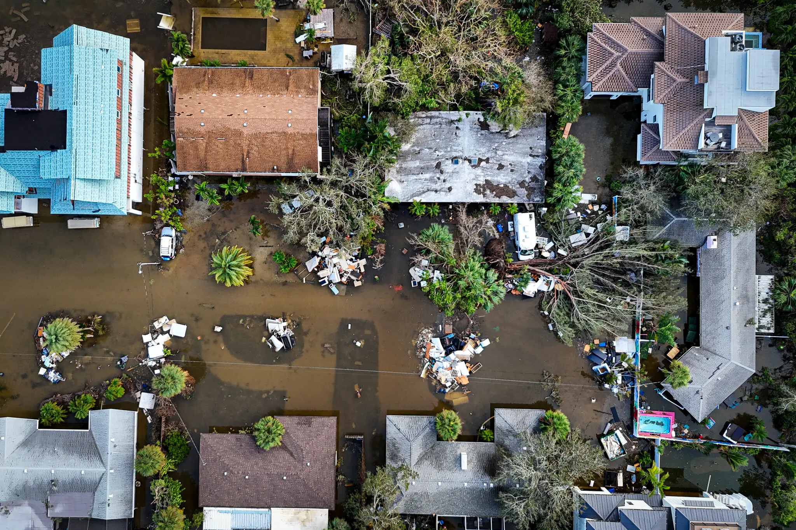

It is the most frequent natural disaster in United States.
Memories with flooding are always devastating, from property losses
to impact on people's lives. Each year, heavy rains, hurricanes, and
rising sea levels result in substantial financial losses, leaving families
struggling to recover from the aftermath. Both governments and individuals
bear a heavy financial burden because of it.
Beyond the numbers, we aim to share the real stories and feelings of those who
have faced the harsh realities of flooding, illustrating their struggles and resilience.
In the historical overview of significant floods that have shaped the life of the
nation, emphasizing the urgent need for awareness and preparedness in the face of
this growing threat.
First, let's take a look at the financial losses during the floods, as it's one of
the most telling indicators of the severity of floods is the financial loss they
inflict.
Below, we explore the top 10 states with the most significant financial impacts from
flooding. Based on data from fiscal year 2024, while flooding is impacting the entire
nation, the bar chart below emphasizes the top 10 states with the greatest financial
burdens, showing the number of records for closed losses with payment,
closed losses without payment, and open losses
(active claims still unresolved).
Please hover or zoom in the bar chart for more details.
Texas and Florida lead the list in terms of claims, but notably, Iowa, with fewer than
one-tenth the claims of these states, still ranks 10th in recovery costs.
Here we delve into the specific financial impacts on individuals and businesses within
these states. The chart below illustrates detailing loss payments categorized
by different occupancy and business groups.
Additionally, it highlights the individual payouts in policies,
separating it into building coverage, content coverage, and both categories.
By examining these factors, we gain insight into not only the magnitude of financial losses
but also how well residents and businesses are protected against the aftermath of flooding.
This data serves as a crucial reminder of the need for comprehensive insurance policies
and proactive measures to mitigate the financial burdens that come with flooding.
Understanding these individual loss payments and coverage details helps inform future policies and preparedness
efforts aimed at supporting affected communities.
Please click the parts you are interested in to check more details.
As flooding poses significant challenges across the U.S., it's crucial to recognize that many of these floods
are triggered by severe weather events, especially hurricanes, which bring
destructive winds and torrential rain.
On the evening of September 24, 2024, Hurricane Helene made landfall in Florida's Big Bend area,
impacting the region as a powerful Category 4 storm. Following this, on October 9, Hurricane Milton
struck Florida as a Category 3 storm. Both hurricanes caused widespread damage and significant flooding
throughout the state, severely affecting communities and infrastructure.
Please click the button below to check the paths and stories of Hurricane Helene and Milton.

 



 
